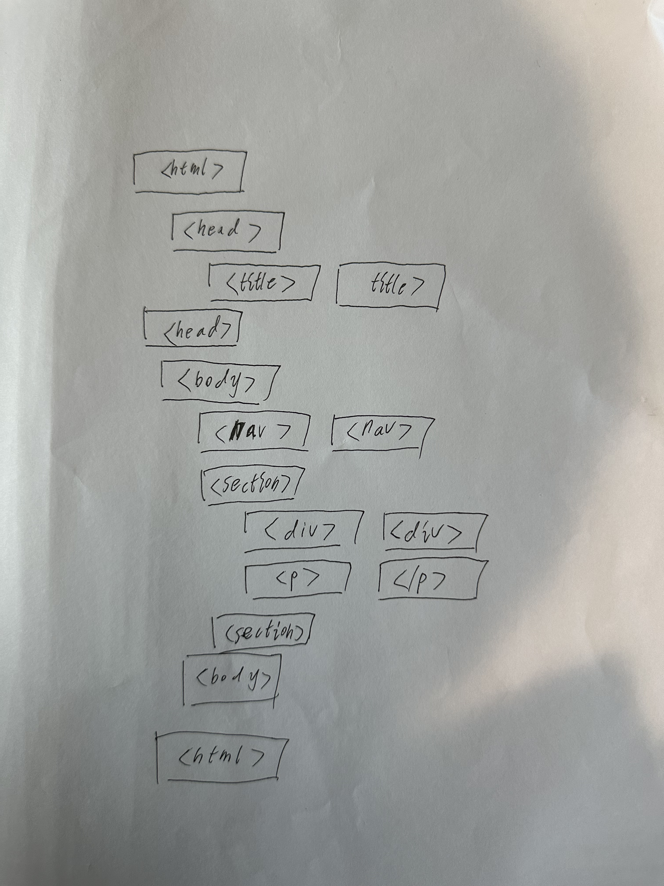

WEEK 1
To learn coding skills through classroom activities by correctly placing basic HTML structures.
Wot is Interactive Media?
Interactive media refers to any type of media that allows for active participation or interaction from the audience. This can include websites, video games, social media platforms, mobile apps, and more.
Wot is the WWW?
The WWW stands for the World Wide Web, which is a system of interconnected hypertext documents accessed via the Internet. It allows users to navigate between different webpages using hyperlinks and browse information stored on web servers worldwide.